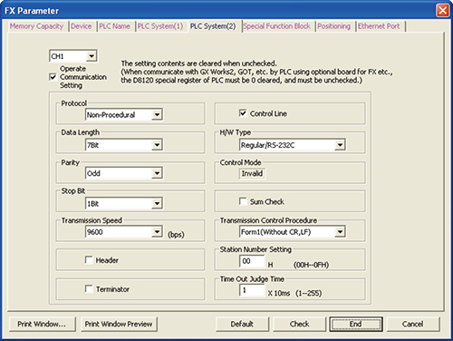
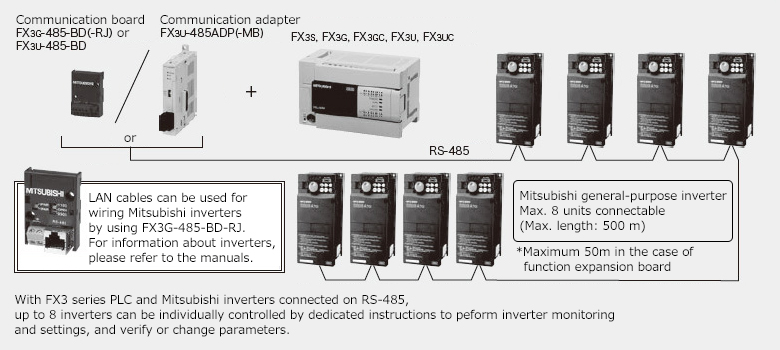

MELSEC-F series Inverter communication


Features
FX3 series PLCs have Mitsubishi inverter protocol and dedicated instructions for communication control built-in. Mitsubishi inverters can be easily controlled just by adding an RS-485 communication device.
Applicable communication device
RS-485 communication device
| Model | Features/Communication method | Applicable FX PLC | |||||||||
|---|---|---|---|---|---|---|---|---|---|---|---|
| FX 3S |
FX 3G |
FX 3U |
FX 3GC |
FX 3UC |
|||||||
| FX3G-485-BD |
Function expansion board that can be added to the PLC
|
○ Max. 1 unit |
*3 ○ Max. 2 units |
× | × | × | |||||
| FX3G-485-BD-RJ | ○ Max. 1 unit |
*3 ○ Max. 2 units |
× | × | × | ||||||
| FX3U-485-BD |
Function expansion board that can be added to the PLC
|
× | × | ○ Max. 1 unit |
× | *1 ○ Max. 1 unit |
|||||
| FX3U-485ADP-MB |
Special adapter that connects to the left side of the PLC
|
*4 ○ Max. 2 units |
*3 *5 ○ Max. 2 units |
*6 ○ Max. 2 units |
○ Max. 2 units |
*2 ○ Max. 2 units |
|||||
- *1Can be connected only to the FX3UC-32MT-LT(-2).
- *2When connecting to FX3UC-32MT-LT(-2), function expansion board is required.
- *3For 14/24 point, maximum 1 unit.
- *4When connecting to FX3S, FX3S-CNV-ADP is required.
- *5When connecting to FX3G, FX3G-CNV-ADP is required.
- *6When connecting to FX3U, function expansion board is required.
Inverter communication instructions
| IVCK | Operation monitor |
|---|---|
| IVDR | Operation control |
| IVRD | Parameter read |
| IVWR | Parameter write |
| IVBWR | Parameter batch write (FX3U(C) only) |
| IVMC | Multiple command (2 types of settings and 2 types of read) |
FX communication parameter setting window

System configuration example

Connectable Mitsubishi general-purpose inverter
FREQROL series inverter (S500/E500/A500/F500/V500/D700/E700/A700/F700)